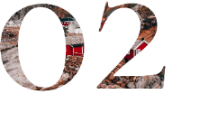

ваша ідеальна подорож
Норвегія
Наступна поїздка до Норвегії
€ 2300 11 - 20 лютого 2021 р.
На нас чекають 10 днів подорожі та 5 унікальних місць у Норвегії ...
про нас
Тури, розроблені експертами.
10 днів
захоплення північними містами.
фіорди та водоспади.
Ми пропонуємо екскурсії по Норвегії - одній з найкрасивіших північних країн. Ми перетнемо всю країну, від Осло до Тромсе, відвідаємо дивовижні міста та побачимо приголомшливу природу.
Програма ретельно продумана, в кожній групі не більше 10 осіб плюс україномовний гід. Комфортний транспорт та ночі в готелях 3*+ включені у вартість.
Програма ретельно продумана, в кожній групі не більше 10 осіб плюс україномовний гід. Комфортний транспорт та ночі в готелях 3*+ включені у вартість.

Зв'яжіться з нами
Деякі умови туру можуть бути змінені в залежності від сезону. Щоб дізнатися більше, будь ласка, зв'яжіться з нами.

Виберіть дату
Ми проводимо екскурсії цілий рік, майже щотижня, але найкомфортнішою погодою для огляду визначних пам'яток є літо.

Почніть свою подорож
За необхідності ми допомагаємо подати документи на візу до Норвегії, а також радимо, які речі слід взяти з собою.
маршрут туру
Від Осло до Тромсе
Ми подорожуватимемо майже по всій країні, від Осло до Тромсе. На нас чекає багато дивовижних місць, включаючи галасливі міста та рибальські села. Ви побачите справжню Норвегію у всій красі.
-
 Офіційна ЛіцензіяМи є ліцензованим туроператором і маємо всі необхідні дозволи на проведення турів по Норвегії.
Офіційна ЛіцензіяМи є ліцензованим туроператором і маємо всі необхідні дозволи на проведення турів по Норвегії. -
 Професійний ГідПо всьому маршруту вас буде супроводжувати професійний гід, який покаже найкрасивіші місця.
Професійний ГідПо всьому маршруту вас буде супроводжувати професійний гід, який покаже найкрасивіші місця. -
 110% ЗадоволенняНорвегія вкраде ваше серце з першого дня нашої подорожі. Неможливо не закохатись у цю країну!
110% ЗадоволенняНорвегія вкраде ваше серце з першого дня нашої подорожі. Неможливо не закохатись у цю країну!

про Норвегію
Земля Опівнічного Сонця
Вважається, що назву цій самобутній країні та одному з найбільш захоплюючих дух місць на нашій планеті дало давньоскандинавське слово Norðrvegr, що буквально означає "шлях на північ".
Норвегія славиться зеленими лісами та горами, незайманими льодовиками, галасливими та прохолодними водоспадами, озерами, красивими фіордами,
Норвегія також відома своїми вражаючими пейзажами, полюванням, риболовлею, цікавою та розважальною історією та культурою. Все це приваблює любителів подорожей, які приїжджають до Норвегії незалежно від сезону з усього світу.
білими ночами та полярними вогнями
. Красу Норвегії не можна описати словами!Норвегія також відома своїми вражаючими пейзажами, полюванням, риболовлею, цікавою та розважальною історією та культурою. Все це приваблює любителів подорожей, які приїжджають до Норвегії незалежно від сезону з усього світу.
17,000+
Фіордів
36
Кілометрів прибережної смуги
450,000+
Прісноводних озер
10,000
Водоспадів
Хочете відправитися на рибалку в Тромсе, Норвегія?
місця
Де ми побуваємо?
На нас чекають 10 днів подорожі та 5 унікальних місць у Норвегії. Прочитайте більше про кожне місце з нашого маршруту нижче.
Осло - Перша точка
Столиця та найбільше місто Норвегії
1 ніч
Готель Scandic
Починаємо подорож із Осло, столиці Норвегії. Під час пішохідної екскурсії ви побачите оперний театр, парламент, королівський палац та інші визначні місця.
-
- Вечеря включена
-
 - Залиште свої речі в готелі
- Залиште свої речі в готелі -
 - Трансфер з аеропорту
- Трансфер з аеропорту
Тронхейм - Другий пункт
Перша столиця з Королівською Резиденцією
2 ночі
Готель Radisson
Тут знаходиться головна християнська визначна пам'ятка Норвегії - собор Нідарос. Архітектурним знаком нової ери є висока телевізійна вежа з рестораном, що обертається.
-
 - Прибуття о 9 ранку
- Прибуття о 9 ранку -
- Захоплюючі дух місця для Instagram-фото
-
- 3-годинна пішохідна екскурсія
Бодо - Третя точка
Унікальне місце для риболовлі у захоплюючих краєвидах
2 ночі
Гостьовий будинок Gronheim
Ми залишили "міську" Норвегію, а Бодо - це наша перша зупинка, де немає визначних пам'яток. Ми просто підемо на риболовлю, насолодимося свіжим повітрям та спробуємо страви з лососем та фореллю.
-
- Місця для риболовлі
-
 - Рибна вечеря
- Рибна вечеря -
 - Поїздка на канатній дорозі
- Поїздка на канатній дорозі
Лофотенські острови - Четвертий пункт
Приголомшливе місце за Полярним колом
2 ночі
Готель Cabinn
Острови розташовані в суворих водах Норвезького моря. Це край дикої природи, величних гір, фіордів та довгих піщаних пляжів.
-
 - Унікальні пляжі
- Унікальні пляжі -
 - Дегустація місцевих лікерів
- Дегустація місцевих лікерів -
 - Подорож на човні
- Подорож на човні
Тромсе - Кінцева точка
Найкраще місце для спостереження за Північним Сяйвом
3 ночі
Готель Scandic
Найбільше норвезьке місто за Полярним колом також називають "Північним Парижем". Основними визначними пам'ятками є Полярний музей та Арктичний собор.
-
 - Безкоштовні сувеніри
- Безкоштовні сувеніри -
 - Міжнародний аеропорт
- Міжнародний аеропорт -
 - Північне Cяйво
- Північне Cяйво
приголомшливі місця
Неймовірні Пейзажі
Красу Норвегії навряд чи можна переоцінити. Тут є буквально все: льодовики, зелені ліси, пляжі. Приїжджайте і подивіться своїми очима.


"А ви готові впустити в своє серце справжню казку півночі? Тоді відвідайте Норвегію - це справжнє задоволення бродити стежками тролів в піших турах, порибалити в неймовірних місцях і побачити казкове Північне Сяйво! Ця країна залишиться в моєму серці назавжди..."
FAQ
Ознайомтесь з нашими вміло
розробленими турами
Ми намагалися зробити наш
тур по Норвегії
максимально комфортним та цікавим. Якщо у вас все ще є питання, ви можете зв’язатися з нами безпосередньо або заповнити форму нижче.Цей тур вимагає фізичної підготовки?
Цей тур підходить для непідготовлених туристів. Ніякого сходження на скелю, ми обіцяємо.
Чи зможу я побачити Північне Сяйво?
Ми не можемо вам цього обіцяти. Північне сяйво з’являється лише взимку за особливих обставин. Але ми полюватимемо на нього в Тромсе.
Чи можу я взяти з собою на екскурсію своїх дітей?
Так, ми пропонуємо знижку 50% для дітей.
Чи можу я приєднатися до вас не в Осло, а в іншому місті?
Залежно від погодних умов наш маршрут може змінитися, тому ми рекомендуємо починати разом з іншими туристами з Осло. Ми не міняємо маршрут, щоб забирати туристів по дорозі.